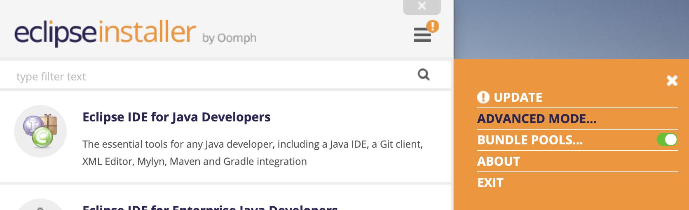
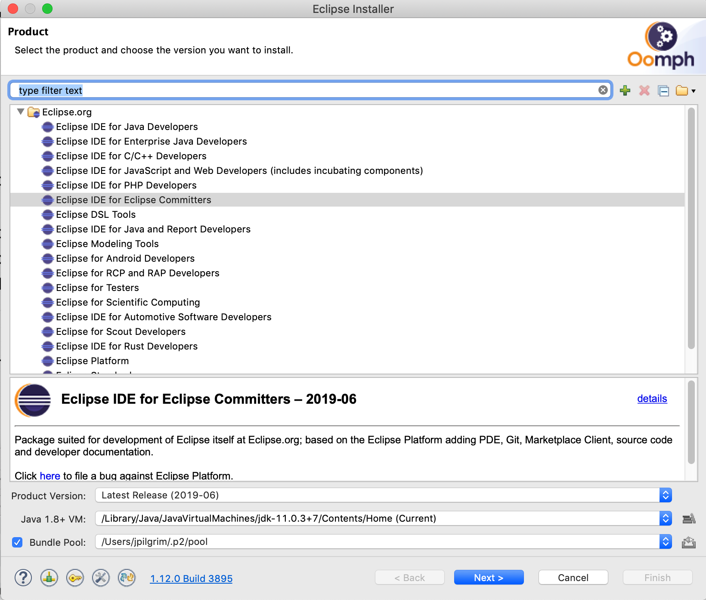
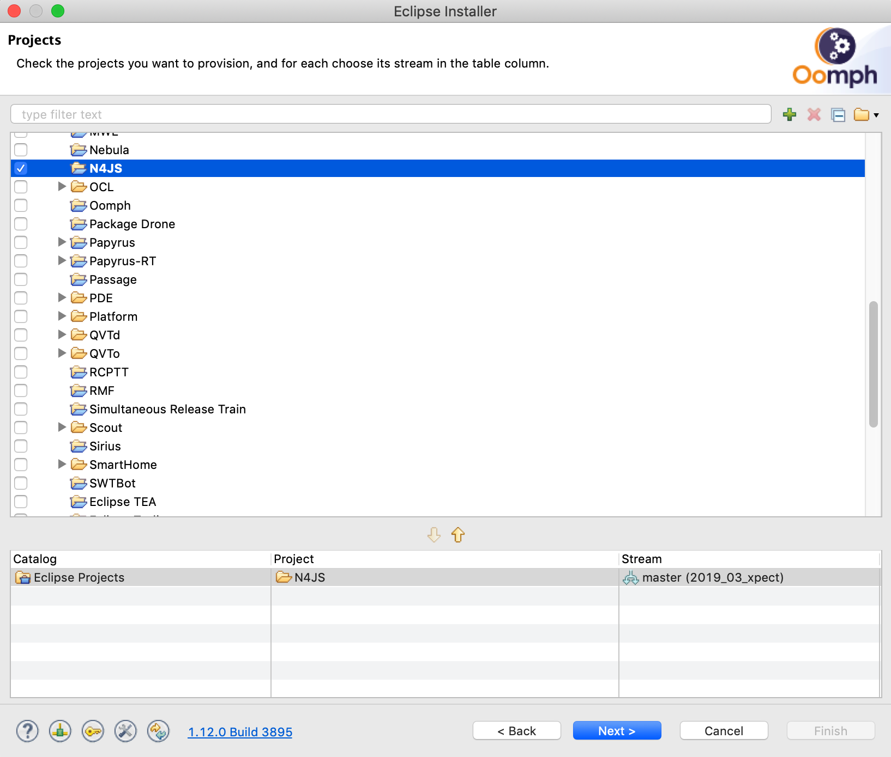
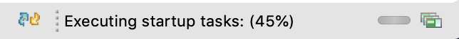
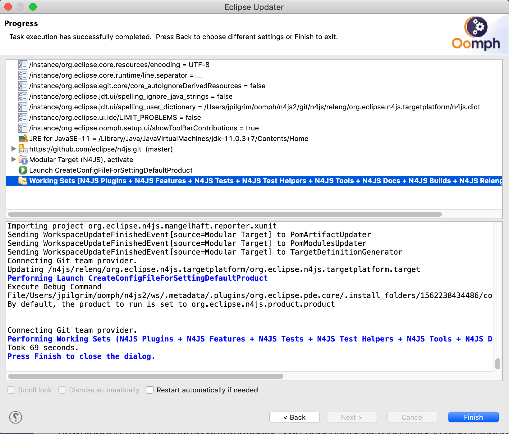
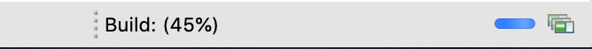

Download
Nightly Builds
If you just want to use the Eclipse N4JS IDE, you probably want to download the product directly.
Since the Eclipse N4JS project is in incubation phase, we do not provide release versions yet. You can find links to nightly builds (update site and products for Windows, Linux and macos) at the N4JS Eclipse project's download page.
In order to run the product, i.e. the Eclipse N4JS IDE, you need Java (version 11), to be installed on your machine.
Eclipse Installer (Oomph)
For developing extensions for the N4JS language (or simply to fix bugs ;-) ), the recommended way to install the Eclipse IDE and set up the N4JS Java sources in a developer workspace is to use the Eclipse Installer. This installer is available from Eclipse.org. Run the installer and follow these steps (click on the images to enlarge):
-  Switch to Advanced Mode via the menu located in the upper-right corner. This will let you select the product with version and a specific project (N4JS).
-  Select a product, e.g. "Eclipse IDE for Eclipse Committers" with a product version (usually latest version)
-  Double-click the entry Eclipse Projects/N4JS so that it is shown in the catalog view
- On the next page, configure your desired paths for the installation and workspace directories. You may want to use git with https instead of ssh
- Begin installation
{kind=link}
{kind=link}
{kind=link}
Once Eclipse with all plugins is downloaded, it is automatically started by the installer. The Eclipse installer application is the finished, but additional installer scripts are run within the downloaded and automatically started IDE. You can see the installer scripts by clicking on the icon next to the startup tasks report in the status bar. 
{kind=link}
The workspace is configured automatically. This includes fetching the necessary git repository. If you have selected git with SSH you may run into problems. In this case you can re-run the scripts and select HTTPS instead, this should work in any case.
 Eventually the installer scripts are done, that means the git repository has been cloned and the workspace has been configured (including the project set setup).
{kind=link}
Now the automatical build kicks in as you can see in the status bar. 
{kind=link}
The build will show a lot of erros while still working. Eventually the whole project should have been compiled without any errors. Unfortunately, due to a known issue, two problems exists. Please have a look at the linked issue on how to fix that (it is quite easy).
System Requirements: In all cases, Java 11 is required to be installed on your system. Node.js version 10+ is also required. The N4JS plugins require the Eclipse 2019-06 release.